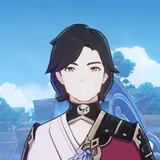
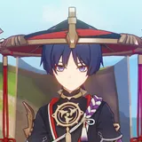
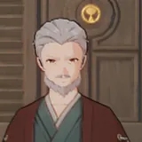

Chương II · Màn III
Thiên Thủ Bách Nhãn, Thiên Hạ Nhân Gian
Nhiệm vụ Ma Thần — Inazuma
Nhân vật xuất hiện
 Nhân vật chính · Nhà Lữ HànhLumineNhà Lữ Hành đến từ thế giới khác. Bị vị thần lạ mặt phong ấn và cướp mất người anh song sinh, cô bắt đầu hành trình đi tìm Bảy Vị Thần của Teyvat.
Nhân vật chính · Nhà Lữ HànhLumineNhà Lữ Hành đến từ thế giới khác. Bị vị thần lạ mặt phong ấn và cướp mất người anh song sinh, cô bắt đầu hành trình đi tìm Bảy Vị Thần của Teyvat. Bạn đồng hànhPaimonĐược Lumine cứu khỏi chết đuối hai tháng trước, Paimon tự nhận làm người dẫn đường cho cô. Hay ăn, hay nói, và rất ghét bị gọi là “thực phẩm dự trữ”.
Bạn đồng hànhPaimonĐược Lumine cứu khỏi chết đuối hai tháng trước, Paimon tự nhận làm người dẫn đường cho cô. Hay ăn, hay nói, và rất ghét bị gọi là “thực phẩm dự trữ”.- Người Trị Vì Đảo Watatsumi · Thống soái quân kháng chiếnSangonomiya KokomiPhong Lumine làm đội trưởng “Đội Cá Kiếm 2”. Khi phát hiện “vũ khí bí mật” của nhà tài trợ là Delusion của Fatui, cô ra lệnh tịch thu toàn bộ và chỉ cho Lumine nơi có thể là công xưởng.

Đội trưởng “Đội Cá Trích 1” · Quân kháng chiếnTeppeiNgười bạn đưa Lumine về Đảo Watatsumi. Lập nhiều chiến công nhờ “vũ khí bí mật” của nhà tài trợ, mà không biết đó là Delusion đang hút cạn sinh mạng mình.- Đại tướng quân kháng chiếnGorouPhát hiện quân sĩ lão hóa kỳ lạ vì lén dùng “vũ khí bí mật”, mang một chiếc đến cho Kokomi. Dẫn quân kháng chiến xông lên trong trận chiến cuối cùng.
- OQuân kháng chiến · Đảo WatatsumiOokubo DaisukeNgười bàn chuyện quân lương với Kokomi, kể về nhà tài trợ giấu mặt.
- KĐội Cá Kiếm 2Koutoku và YoshihisaĐội trưởng đại diện và thành viên lão làng của Đội Cá Kiếm 2. Thử thách Lumine bằng đám ronin rồi công nhận cô làm đội trưởng.

Quan Chấp Hành thứ 6 của FatuiScaramoucheNgười “thay mặt thực hiện kế hoạch” ở công xưởng Delusion trên Đảo Yashiori. Khiêu khích Lumine bằng cái chết của Teppei và dùng oán niệm Ma Thần giăng bẫy cô. Guuji Đền Narukami · “Gia quyến” của Lôi ThầnYae MikoCứu Lumine khỏi tay Scaramouche, kể về Ei và “Nhất Tâm Tịnh Thổ”, rồi vạch kế hoạch ly gián Hiệp Hội Tenryou để đưa Lumine trở lại trước mặt Raiden Shogun.
Guuji Đền Narukami · “Gia quyến” của Lôi ThầnYae MikoCứu Lumine khỏi tay Scaramouche, kể về Ei và “Nhất Tâm Tịnh Thổ”, rồi vạch kế hoạch ly gián Hiệp Hội Tenryou để đưa Lumine trở lại trước mặt Raiden Shogun.- Đại tướng Quân Shogunate · Hiệp Hội TenryouKujou SaraĐòi bắt Lumine ở Đền Narukami, nhận lời hẹn ba ngày của Yae Miko. Khi thấy chứng cứ, cô đối chất với gia chủ Kujou Takayuki và quyết định kháng lệnh.
- Ninja của ShuumatsubanSayuNinja hay buồn ngủ được Yae Miko “tóm” đến giúp. Lẻn vào Hiệp Hội Tenryou lấy công văn và thư từ trao đổi với Fatui.
 Người hầu của nhà Kamisato · Hiệp Hội YashiroThomaVẫn trốn trong Phòng Trà Komore, nghĩ ra kế dùng pháo hoa của Yoimiya để dụ thân binh Hiệp Hội Tenryou.
Người hầu của nhà Kamisato · Hiệp Hội YashiroThomaVẫn trốn trong Phòng Trà Komore, nghĩ ra kế dùng pháo hoa của Yoimiya để dụ thân binh Hiệp Hội Tenryou.- Đại tiểu thư nhà KamisatoKamisato AyakaNhận ra công văn của Hiệp Hội Tenryou trình lên Shogun có vấn đề, cùng Lumine lập kế hoạch lấy chứng cứ.
- Chủ Tiệm Pháo Hoa NaganoharaYoimiyaTặng Lumine một loại pháo hoa “siêu to khổng lồ” để dụ lính gác.

Gia chủ nhà Kujou · Hiệp Hội TenryouKujou TakayukiThừa nhận đã qua lại với Fatui và che giấu chuyện tiền tuyến trong công văn trình lên Shogun, vì tin vào sức mạnh của “Lưỡi Đao Vô Tưởng”. Quan Chấp Hành thứ 8 của Fatui · Sứ giả SnezhnayaSignoraKẻ giật dây chiến loạn ở Inazuma. Bị Lumine thách “Ngự Tiền Quyết Đấu” ở Thiên Thủ Các và thua trận.
Quan Chấp Hành thứ 8 của Fatui · Sứ giả SnezhnayaSignoraKẻ giật dây chiến loạn ở Inazuma. Bị Lumine thách “Ngự Tiền Quyết Đấu” ở Thiên Thủ Các và thua trận. Lôi Thần · EiRaiden ShogunChứng kiến cuộc quyết đấu ở Thiên Thủ Các. Trong “Nhất Tâm Tịnh Thổ”, Ei bị nguyện vọng của người dân và Lumine đánh bại, rồi phế bỏ Lệnh Truy Lùng Vision.
Lôi Thần · EiRaiden ShogunChứng kiến cuộc quyết đấu ở Thiên Thủ Các. Trong “Nhất Tâm Tịnh Thổ”, Ei bị nguyện vọng của người dân và Lumine đánh bại, rồi phế bỏ Lệnh Truy Lùng Vision.- Ronin SamuraiKaedehara KazuhaXuất hiện trong trận chiến cuối cùng, đỡ lấy nhát “Lưỡi Đao Vô Tưởng”.
Các phần
- Phần 1Kiếm, Cá Và Kẻ Kháng Chiến
- Phần 2Người Khao Khát Được Thần Linh Chú Ý
- Phần 3Delusion
- Phần 4Con Đường Của Thân Quyến
- Phần 5Công Văn Định Tội
- Phần 6Trung Dũng Mù Quáng
- Phần 7Ngự Tiền Quyết Đấu
- Phần 8Trăm Mắt Nghìn Tay
- Phần 9Nguyện Vọng
Toàn bộ lời thoại được lấy từ bản tiếng Việt chính thức của trò chơi. Ở những đoạn người chơi được chọn câu trả lời, truyện chọn một lựa chọn duy nhất.